(2.65)
Though this form goes by the name of polar coordinate form and has its basis in adding vectors and angles, and so on, it helps to think of it as a shorthand version of the polar exponential form, since it is really no different from the exponential form (same arithmetic rules apply), but it turns out to be a bit more intuitive, as well as easier to deal with in calculations.
Now we have basically four ways to express a complex number:
z = a + jb, z = r cos θ + jr sin θ, z = rejθ, z = r ∠ θ
Each form is useful in its own right. Sometimes it is easier to use z = a + jb, and sometimes it is easier to use z = rejθ (or z = r ∠ θ)—it all depends on the situation, as we’ll see in a moment.
The model shown in Fig. 2.156 is designed to help you get a feeling for how the various forms of a complex number are related. For what follows, you will need to know the arithmetic rules for complex numbers, too, which are summarized in Table 2.10.
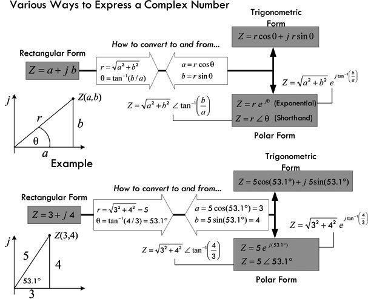
FIGURE 2.156
TABLE 2.10 Arithmetic Rules for Complex Numbers
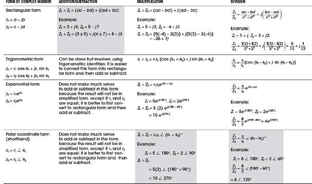
* = Usually the most efficient form to use when doing your calculations—other forms are too difficult or provide unintuitive results.
Here are some useful relationships to know when dealing with complex numbers:
X (in degrees) = 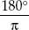
X (in radians), X (in radians) = 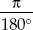
X (in degrees)
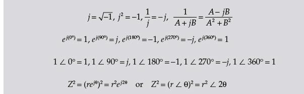
The following example shows a calculation that makes use of both rectangular and polar forms of a complex number to simplify a calculation involving addition, multiplication, and division of complex numbers:
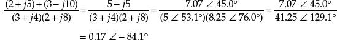
The result can easily be converted into trigonometric or rectangular forms if the need exists:
0.17 ∠ −84.1° = 0.17 cos (−84.1°) + j0.17 sin (−84.1°) = 0.017 − j0.17
Notice that when multiplication or division is involved, it is easier to first convert the complex terms into exponential form (shorthand version). In essence, for addition and subtraction you’ll probably use rectangular form (though trigonometric form isn’t difficult in this case), and use exponential (shorthand) form for multiplication and division. If you understand the preceding calculation, you should find the ac theory to come easy.
Note that sometimes the following notation is used to express a complex number:
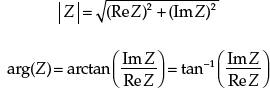
(2.66)
where |Z| is the magnitude or modus of a complex number (or r), Re Z is the real part of the complex number, and Im Z is the imaginary part of the number, while arg(Z) (or phase θ) represents the argument of Z or the phase angle (θ). For example, if Z = 3 + j4, then:
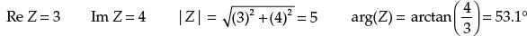
2.27 Circuit with Sinusoidal Sources
Suppose that you are given the two circuits shown in Fig. 2.157 containing linear elements (resistors, capacitors, inductors) driven by sinusoidal voltage sources.
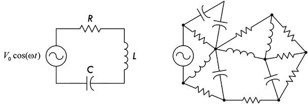
FIGURE 2.157
To analyze the simpler of the two circuits, you could apply Kirchhoff’s voltage law to get the following:
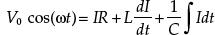
which reduces to:
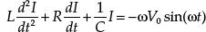
This expression, as we discovered earlier, is a linear second-order nonhomogeneous differential equation. To find the solution to this equation, you could apply, say, the technique of variation of parameters or the method of underdetermined coefficients. After the solution for the current is found, finding the voltages across the resistor, capacitor, and inductor is a simple matter of plugging the current into the characteristic voltage/current equation for that particular component. However, coming up with the solution for the current in this case is not easy because it requires advanced math (and the work is tedious).
Now, as if things were not bad enough, let’s consider the more complex circuit in Fig. 2.157. To analyze this mess, you could again apply Kirchhoff’s voltage and current laws to a number of loops and junctions within the circuit and then come up with a system of differential equations. The math becomes even more advanced, and finding the solution becomes ridiculously difficult.
Before I scare you too much with these differential equations, let me tell you about an alternative approach, one that does away with differential equations completely. This alternative approach makes use of what are called complex impedances—something that will use the complex numbers we talked about in the last section.
2.27.1 Analyzing Sinusoidal Circuits with Complex Impedances
To make solving sinusoidal circuits easier, it’s possible to use a technique that enables you to treat capacitors and inductors like special kinds of resistors. After that, you can analyze any circuit containing resistors, capacitors, and inductors as a “resistor” circuit. By doing so, you can apply all the dc circuit laws and theorems that were presented earlier. The theory behind how the technique works is a bit technical, even though the act of applying it is not hard at all. For this reason, if you do not have the time to learn the theory, I suggest simply breezing through this section and pulling out the important results. Here’s a look at the theory behind complex impedances.
In a complex, linear, sinusoidally driven circuit, all currents and voltages within the circuit will be sinusoidal in nature after all transients have died out. These currents and voltages will be changing with the same frequency as the source voltage (the physics makes this so), and their magnitudes will be proportional to the magnitude of the source voltage at any particular moment in time. The phase of the current and voltage patterns throughout the circuit, however, most likely will be shifted relative to the source voltage pattern. This behavior is a result of the capacitive and inductive effects brought on by the capacitors and inductors.
As you can see, there is a pattern within the circuit. By using the fact that the voltages and currents will be sinusoidal everywhere, and considering that the frequencies of these voltages and currents will all be the same, you can come up with a mathematical trick to analyze the circuit—one that avoids differential equations. The trick involves using what is called the superposition theorem. The superposition theorem says that the current that exists in a branch of a linear circuit that contains several sinusoidal sources is equal to the sum of the currents produced by each source independently. The proof of the superposition theorem follows directly from the fact that Kirchhoff’s laws applied to linear circuits always result in a set of linear equations that can be reduced to a single linear equation with a single unknown. The unknown branch current thus can be written as a linear superposition of each of the source terms with an appropriate coefficient. (Figure 2.158 shows the essence of superimposing of sine waves.)
FIGURE 2.158 (a) Shows two sine waves and the resulting sum—another sine wave of the same frequency, but shifted in phase and amplitude. This is the key feature that makes it easy to deal with sinusoidally driven linear circuits containing resistors, capacitors, and inductors. Note that if you were to try this with sine waves of different frequencies, as shown in (b), the resultant waveform isn’t sinusoidal. Superimposing nonsinusoidal waveforms of the same frequency, such as squarewaves, isn’t guaranteed to result in a similar waveform, as shown in (c).
What this all means is that you do not have to go to the trouble of calculating the time dependence of the unknown current or voltage within the circuit because you know that it will always be of the form cos (ωt + φ). Instead, all you need to do is calculate the peak value (or RMS value) and the phase, and apply the superposition theorem. To represent currents and voltages and apply the superposition theorem, it would seem obvious to use sine or cosine functions to account for magnitude, phase, and frequency. However, in the mathematical process of superimposing (adding, multiplying, etc.), you would get messy sinusoidal expressions in terms of sines and cosines that would require difficult trigonometric rules and identities to convert the answers into something you could understand. Instead, what you can do to represent amplitudes and phase of voltages and currents in a circuit is to use complex numbers.
Recall from the section on complex numbers that a complex number exhibits sinusoidal behavior—at least in the complex plane. For example, the trigonometric form of a complex number z1 = r1 cos θ1 + jr1 sin θ1 will trace out a circular path in the complex plane when θ runs from 0 to 360°, or from 0 to 2π radians. If you graph the real part of z versus θ, you get a sinusoidal wave pattern. To change the amplitude of the wave pattern, you simply change the value of r. To set the frequency, you simply multiply θ by some number. To induce a phase shift relative to another wave pattern of the same frequency, you simply add some number (in degrees or radians) to θ. If you replace θ with ωt, where (ω = 2πf), replace the r with V0, and leave a place for a term to be added to ωt (a place for phase shifts), you come up with an expression for the voltage source in terms of complex numbers. You could do the same sort of thing for currents, too.
Now, the nice thing about complex numbers, as compared with sinusoidal functions, is that you can represent a complex number in various ways, within rectangular, polar-trigonometric, or polar-exponential forms (standard or shorthand versions). Having these different options makes the mathematics involved in the superimposing process easier. For example, by converting a number, say, into rectangular form, you can easily add or subtract terms. By converting the number into polar-exponential form (or shorthand form), you can easily multiply and divide terms (terms in the exponent will simply add or subtract).
It should be noted that, in reality, currents and voltages are always real; there is no such thing as an imaginary current or voltage. But then why are there imaginary parts? The answer is that when you start expressing currents and voltages with real and imaginary parts, you are simply introducing a mechanism for keeping track of the phase. (The complex part is like a hidden part within a machine; its function does not show up externally but does indeed affect the external output—the “real,” or important, part, as it were.) What this means is that the final answer (the result of the superimposing) always must be converted back into a real quantity. This means that after all the calculations are done, you must convert the complex result into either polar-trigonometric or polar-exponential (shorthand form) and remove the imaginary part. For example, if you come across a resultant voltage expressed in the following complex form:
V(t) = 5 V + j 10 V
where the voltages are RMS, we get a meaningful real result by finding the magnitude, which we can do simply by converting the complex expression into polar exponential or shorthand form:
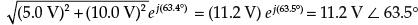
Whatever is going on, be it reactive or resistive effects, there is really 11.2 V RMS present. If the result is a final calculation, the phase often isn’t important for practical purposes, so it is often ignored.
You may be scratching your head now and saying, “How do I really do the superimposing and such? This all seems too abstract or wishy-washy. How do I actually account for the resistors, capacitors, and inductors in the grand scheme of things?” Perhaps the best way to avoid this wishy-washiness is to begin by taking a sinusoidal voltage and converting it into a complex number representation. After that, you can apply it individually across a resistor, a capacitor, and then an inductor to see what you get. Important new ideas and concrete analysis techniques will surface in the process.
2.27.2 Sinusoidal Voltage Source in Complex Notation
Let’s start by taking the following expression for a sinusoidal voltage:
V0 cos (ωt) (ω = 2πf)
and converting it into a polar-trigonometric expression:
V0 cos (ωt) + jV0 sin (ωt)
What about the jV0 sin (ωt) term? It is imaginary and does not have any physical meaning, so it does not affect the real voltage expression (you need it, however, for the superimposing process). To help with the calculations that follow, the polar-trigonometric form is converted into the polar-exponential form using Euler’s relation ejθ = r cos (θ) + jr sin (θ):
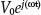
(2.67)
In polar-exponential shorthand form, this would be:
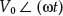
(2.68)
Graphically, you can represent this voltage as a vector rotating counterclockwise with angular frequency ω in the complex plane (recall that ω = dθ/dt, where ω = 2πf). The length of the vector represents the maximum value of V—namely, V0—while the projection of the vector onto the real axis represents the real part, or the instantaneous value of V, and the projection of the vector onto the imaginary axis represents the imaginary part of V.
FIGURE 2.159
Now that you have an expression for the voltage in complex form, you can place, say, a resistor, a capacitor, or an inductor across the source and come up with a complex expression for the current through each component. To find the current through a resistor in complex form, you simply plug V0ej(ωt) into V in I = V/R. To find the capacitor current, you plug V0ej(ωt) into I = C dV/dt. Finally, to find the inductor current, you plug V0ej(ωt) into 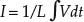. The results are shown in Fig. 2.160.
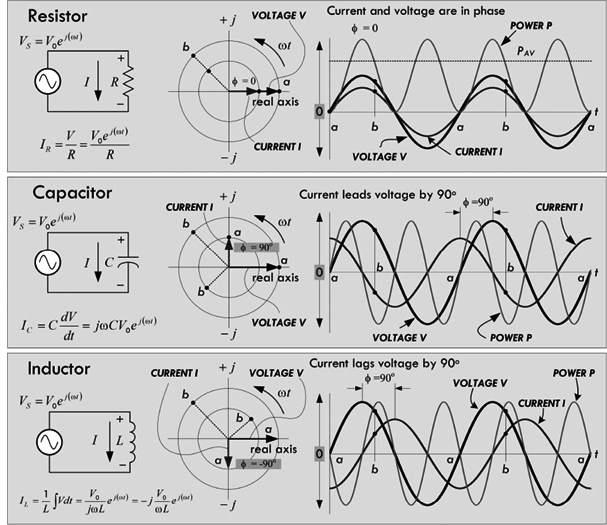
FIGURE 2.160
Comparing the phase difference between the current and voltage through and across each component, notice the following:
Resistor: The current and voltage are in phase, φ = 0°, as shown in the graph in Fig. 2.160. This behavior can also be modeled within the complex plane, where the voltage and current vectors are at the same angle with respect to each other, both of which rotate around counterclockwise at an angular frequency ω = 2πf.
Capacitor: The current is out of phase with the applied voltage by +90°. In other words, the current leads the voltage by 90°. By convention, unless otherwise stated, the phase angle φ is referenced from the current vector to the voltage vector. If φ is positive, then current is leading (further counterclockwise in rotation); if φ is negative, current is lagging (further clockwise in rotation).
Inductor: The current is out of phase with the applied voltage by –90°. In other words, the current lags the voltage by 90°.
We call the complex plane model, showing the magnitude and phase of the voltages and currents, a phasor diagram—where the term phasor implies phase comparison. Unlike a time-dependent mathematical function, a phasor provides only a snapshot of what’s going on. In other words, it only tells you the phase and amplitude at a particular moment in time.
Now comes the important trick to making ac analysis easy to deal with. If we take the voltage across each component and divide it by the current, we get the following (see Fig. 2.161):
FIGURE 2.161
As you can see, the nasty V0ej(ωt) terms cancel, giving us resistance, capacitive reactance, and inductive reactance in complex form. Notice that the resulting expressions are functions only of frequency, not of time. This is part of the trick to avoiding the nasty differential equations.
Now that we have a way of describing capacitive reactance and inductive reactance in terms of complex numbers, we can make an important assumption. We can now treat capacitors and inductors like frequency-sensitive resistors within sinusoidally driven circuits. These frequency-sensitive resistors take the place of normal resistors in dc circuit analysis. We must also replace dc sources with sinusoidal ones. If all voltages, currents, resistances, and reactances are expressed in complex form when we are analyzing a circuit, when we plug them into the old circuit theorems (Ohm’s law, Kirchhoff’s law, Thevinin’s theorem, etc.) we will come up with equations whose solutions are taken care of through the mathematical operations of the complex numbers themselves (the superposition theorem is built in).
For example, ac Ohm’s law Looks Like This:
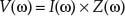
(2.69)
What does the Z stand for? It’s referred to as complex impedance, which is a generic way of describing resistance to current flow, in complex form. The complex impedance may simply be resistive, it may be only capacitive, it may be inductive, or it could be a combination of resistive and reactive elements (e.g., an RLC circuit element). For example:
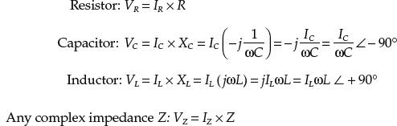
Figure 2.162 shows what we just discussed, along with the phasor expression for a sinusoidal source, and a complex impedance Z composed of a resistor, a capacitor, and an inductor.
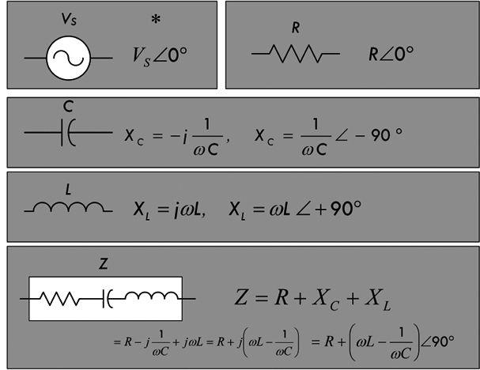
FIGURE 2.162
Continuing along the line of treating complex impedances as frequency-sensitive resistors, we can make use of the resistors in series equation, except now we take impedances in series:
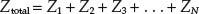
(2.70) N in series
Likewise, the old voltage divider now becomes the ac voltage divider:
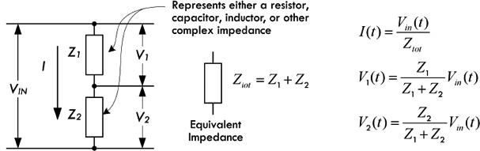
FIGURE 2.163
To find the equivalent impedance for a larger number of impedances in parallel:
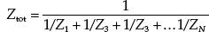
(2.71) N in parallel
(2.72) Two in parallel
The ac current divider is consequently:
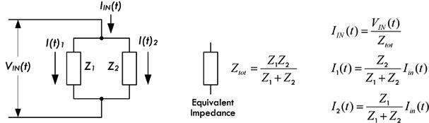
FIGURE 2.164
And perhaps, most important, we can throw complex impedances in Kirchhoff’s voltage and loop equations and solve complex circuits with many nodes:
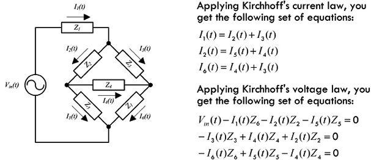
FIGURE 2.165
Example 1: Find the complex impedances of the following networks.
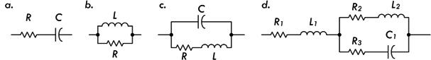
FIGURE 2.166
Answer:
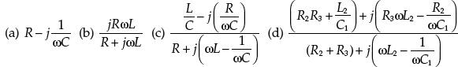
You can simplify those results that have a complex number in the denominator by using:
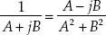
Example 2: Express networks (a) and (c) in the previous example in polar coordinate form.
Answer:
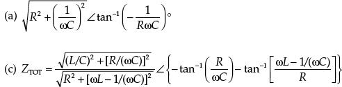
What a mathematical nightmare, you may say, after doing the last example. As you can see, the expressions can get ugly if we don’t start plugging values into the variables from the start. However, the act of finding a complex impedance and using it in ac analysis is vastly easier than using the characteristic equations of resistors, capacitors, and inductors; inserting them into Kirchhoff’s laws; and solving the differential equations.
Example 3: The series RL circuit in Fig. 2.167 is driven by a 12-VAC (RMS), 60-Hz source. L = 265 mH, R = 50 Ω. Find IS, IR, IL, VR, and VL and the apparent power, real power, reactive power, and power factor.
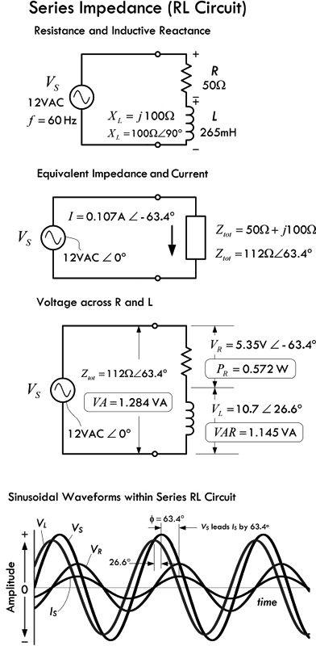
FIGURE 2.167
VS(t) = 17.0 V sin (ωt)
VR(t) = 7.6 V sin (ωt − 63.4°)
VL(t) = 15.1 V sin (ωt + 26.6°)
IS(t) = 0.151 A sin (ωt − 63.4°)
* Peak voltages and currents used in these functions are the RMS equivalents multiplied by 1.414.
First, calculate the reactance of the inductor:
XL = jωL = j(2π × 60 Hz × 265 × 10−3 H) = j 100 Ω
Since the resistor and inductor are in series, the math is easy—simply add complex numbers in rectangular form:
Z = R + XL = 50 Ω + j100 Ω
In polar form, the result is:
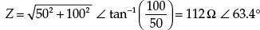
Don’t let the imaginary part or phase angle fool you. The impedance is real; it provides 112 ohms’ worth, though only a portion of this is real resistance—the rest is inductive reactance.
The current can now be found using ac Ohm’s law:
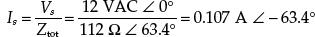
The −63.4° result means the current lags the applied voltage or total voltage across the network by 63.4°. Since this is a series circuit I = IR = IL. The voltage across the resistance and inductor can be found using ac Ohm’s law or the ac voltage divider:
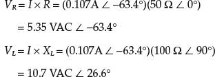
Note that the preceding calculations were for only an instant in time t = 0, as is the case by stating the starting condition: VS = 12 VAC ∠ 0°. But that’s all we need, since we know the phases and the voltages at those phases, which link amplitude. So to create an accurate picture of how the whole system behaves over time, we simply plug the more general ωt into the source voltage, and convert the RMS values into true values by multiplying by 1.414. We get VS = 17.0 V ∠ ωt, which isn’t a snapshot but a continuous mathematic description for all times. To make a graph, we must convert into trigonometric form, ignoring the imaginary part in the process: VS = 17.0 V cos (ωt). Since we are only concerned with phase, we can express VS in terms of a sine function, VS = 17.0 V sin (ωt) and reference all other voltage and current waveforms from it by adding their phase terms and including their peak values, as shown in the following equations.
The apparent power due to the total impedance:
VA = IRMSVRMS = (0.107A)(12 VAC) = 1.284 VA
Only resistance consumes power, however:
PR = IRMS2R = (0.107A)2 (50 Ω) = 0.572 W
The reactive power due to the inductor is:
VAR = IRMS2XL = (0.107A)2 (100 Ω) = 1.145 VA
Power factor (real power/apparent power) is:
PF = 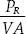 = cos(φ) = cos(-63.4°) = 0.45 lagging
where φ is the phase angle between VS and IS. Note that we haven’t actually discussed apparent and reactive power yet—that’s coming up.
2.27.3 Odd Phenomena in Reactive Circuits
In reactive circuits, circulation of energy accounts for seemingly odd phenomena. In our example in Fig. 2.167, it appears that Kirchhoff’s law doesn’t add up, since the arithmetical sum of the resistor and inductor voltages is:
5.35 VAC + 10.70 VAC = 16.05 VAC
This is greater than the 12-VAC source voltage. The problem here is that we haven’t taken into account the phase.
Their actual result, when phase is taken into account, is:
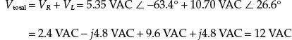
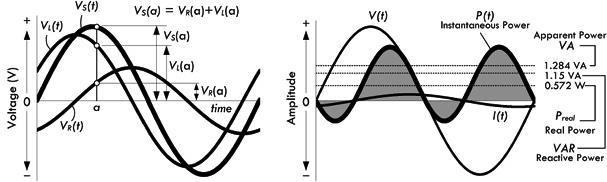
FIGURE 2.168
Note that the use of “VAC” to represent the fact that the voltages are expressed in RMS values is not always followed. Some people like to simply write “V” and assume that all voltages are sinusoidal and thus given in RMS form. The actual peak voltages are related to the RMS voltage value by VP = 1.414 × VRMS.
In other cases, such as a series circuit with capacitance and inductance, the voltages across the components may exceed the supply voltage. This condition can exist because, while energy is being stored by the inductor, the capacitor is returning energy to the circuit from its previously charged state, and vice versa. In a parallel circuit with inductive and capacitive branches, the currents circulating through the components may exceed the current drawn from the source. Again, the phenomenon occurs because the inductor’s collapsing field supplies current to the capacitor and the discharging capacitor provides current to the inductor. We will take a look at these cases in a moment.
2.28 Power in AC Circuits (Apparent Power, Real Power, Reactive Power)
In a complex circuit containing resistors, inductors, and capacitors, how do you determine what kind of power is being used? The best place to start is with the generalized power law P = IRMSVRMS. However, for now, let’s replace P with VA, and call VA the apparent power:
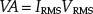
(2.74) Apparent power
In light of our RL series circuit in Fig. 2.167, we find the apparent power to be:
VA = IRMSVRMS = (0.107A)(12 V) = 1.284 VA
The apparent power VA is no different from the power we calculate using the generalized ac power expression. The reason for using VA instead of P is simply a convention used to help distinguish the fact that the calculated power isn’t purely real and is not expressed in watts, as real power is. Instead, apparent power is expressed in volt-amperes, or VA, which happens to be the same letters used for the variable for apparent power. (This is analogous to the variable for voltage being similar to the unit volt, though the variable is distinguished from the unit by being italicized.) In essence, the apparent power takes into account both resistive power losses as well as reactive power. The reactive power, however, isn’t associated with power loss, but is instead associated with energy storage in the form of magnetic fields within inductors and electric fields within capacitors. This energy is later returned to the circuit as the magnetic field in an inductor collapses, or the electric field vanishes as a capacitor discharges later in the ac cycle. Only if a circuit is purely resistive can we say that the apparent power is in watts.
So how do we distinguish what portions of the apparent power are real power and reactive power? Real power is associated with power loss due to heating through an ohmic material, so we can define real power using ac Ohm’s law within the generalized power expression:
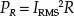
(2.75) Real power
In our series RL circuit in Fig. 2.167, we find the real power to be:
PR = IRMS2R = (0.107 A)2 (50 Ω) = 0.572 W
Notice that real power is always measured in watts.
Now, to determine the reactive power due to capacitance and inductance within a circuit, we create the notion of reactive power. The reactive power is given in volt-ampere reactive, or VAR. We can define the reactive power by using the Ohm’s power law, replacing resistance (or impedance) with a generic reactance X:
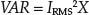
(2.76) Reactive power
At no time should watts be associated with reactive power. In fact, reactive power is called wattless power, and therefore is given in volt-amperes, or VA.
Considering the RL series circuit in Fig. 2.167, the reactive power is:
VAR = IRMS2XL = (0.107 A)2 (100 Ω) = 1.145 VA
You may be saying, great, we can now add up the real power and reactive power, and this will give us the apparent power. Let’s try it out for our RL circuit in Fig. 2.167:
0.572 + 1.145 = 1.717
But wait, the calculated apparent power was 1.284 VA, not 1.717 VA. What’s wrong? The problem is that a simple arithmetic operation on variables that are reactive can’t be done without considering phase (as we saw with adding voltages). Considering phase for our RL series circuit:
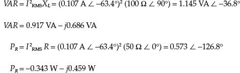
Adding the reactive and real power together now gives us the correct apparent power:
VA = VAR + PR = 0.574 VA − j1.145 VA = 1.281 VA ∠ −63.4°
To avoid doing such calculations, we note the following relationship:
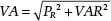
(2.77)
Here, we don’t have to worry about phase angles—the Pythagorean theorem used in the complex plane, as shown in Fig. 2.169, takes care of that. Using the RL series example again and inserting our values into Eq. 2.77, we get an accurate expression relating real, apparent and reactive powers:
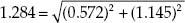
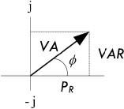
FIGURE 2.169
2.28.1 Power Factor
Another way to represent the amount of apparent power to reactive power within a circuit is to use what’s called the power factor. The power factor of a circuit is the ratio of consumed power to apparent power:
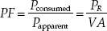
(2.78)
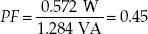
(2.79)
Power factor is frequently expressed as a percentage, in this case 45 percent.
An equivalent definition of power factor is:
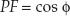
where φ is the phase angle (between voltage and current). In the example in Fig. 2.167, the phase angle is −63.4°, so:
PF = cos (−63.4°) = 0.45
as the earlier calculation confirms.
The power factor of a purely resistive circuit is 100 percent, or 1, while the power factor of a purely reactive circuit is 0.
Since the power factor is always rendered as a positive number, the value must be followed by the words “leading” or “lagging” to identify the phase of the voltage with respect to the current. Specifying the numerical power factor is not always sufficient. For example, many dc-to-ac power inverters can safely operate loads having large net reactance of one sign but only a small reactance of the opposite sign. The final calculation of the power factor in the example in Fig. 2.167 yields the value of 0.45 lagging.
In ac equipment, the ac components must handle reactive power as well as real power. For example, a transformer connected to a purely reactive load must still be capable of supplying the voltage and be able to handle the current required by the reactive load. The current in the transformer windings will heat the windings as a result of I2R losses in the winding resistances.
As a final note, there is another term to describe the percentage of power used in reactance, which is called the reactive factor. The reactive factor is defined by:
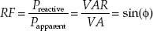
(2.80)
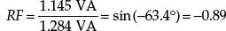
Example 4: The LC series circuit shown in Fig. 2.170 is driven by a 10-VAC (RMS), 127,323-Hz source. L = 100 μH, C = 62.5 nF. Find IS, IR, IL, VL, and VC and the apparent power, real power, reactive power, and power factor.
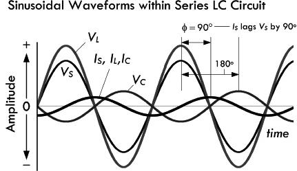
FIGURE 2.170
VS(t) = 14.1 V sin (ωt)
VL(t) = 18.90 V sin (ωt)
VC(t) = 4.72 V sin (ωt − 180°)
IS(t) = 0.236 A sin (ωt − 90°)
* Peak voltages and currents used in these functions are the RMS equivalents multiplied by 1.414.
First we calculate the inductive and capacitive reactances:
Since the inductor and capacitor are in series, the math is easy—simply add complex numbers in rectangular form:
Z = XL + XC = j80 Ω + (−j20 Ω) = j60 Ω
In polar form, this is 60 Ω ∠ 90°. The fact that the phase is 90°, or the result is positive imaginary, means the impedance is net inductive. Don’t let the imaginary part fool you—the impedance is actually felt—it provides 60 Ω of impedance, even though it’s not resistive.
The current can now be found using ac Ohm’s law:
Note that we used 60 Ω ∠ 90° (polar) to make the division easy. The −90° result means the source current (total current) lags the source voltage by 90°. Since this is a series circuit: IS = IL = IC.
The voltage across the inductor and capacitor can be found using ac Ohm’s law (or the ac voltage divider):
Notice that the voltage across the inductor is greater than the supply voltage; the capacitor supplies current to the inductor as it discharges.
To convert these snapshots into a continuous set of functions, we convert all RMS values to true value (× 1.414), add the ωt term to the phase angles, and convert to trigonometric form, then delete the imaginary part. Our results would all be in terms of cosines, but to make things pretty, we select sines. Doing this doesn’t make any practical difference. See graphs and equations to left.
The apparent power due to the total impedance is:
VA = IRMSVRMS = (0.167 A)(10 VAC) = 1.67 VA
The real (true) power consumed by the circuit is:
PR = IRMS2R = (0.167 A)2(0 VAC) = 0 W
Only reactive power exists, and for the inductor and capacitor:
VARL = IRMS2XL = (0.167 A)2(80 Ω) = 2.23 VA
VARC = IRMS2XC = (0.167 A)2(20 Ω) = 0.56 VA
Power factor is:
A power factor of 0 means the circuit is purely reactive.
Example 5: The LC parallel circuit in Fig. 2.171 is driven by a 10-VAC (RMS), 2893.7-Hz source. L = 2.2 mH, C = 5.5 μF. Find IS, IL, IC, VL, and VC and the apparent power, real power, reactive power, and power factor.
FIGURE 2.171
VS(t) = VL(t) = VC(t) = 14.1V sin (ωt)
IS(t) = 1.061 A sin (ωt + 90°)
IL(t) = 0.354 A sin (ωt − 90°)
IC(t) = 1.414 A sin (ωt + 90°)
* Peak voltages and currents used in these functions are the RMS equivalents multiplied by 1.414.
First we find the inductive and capacitive reactances:
Since the inductor and capacitor are in parallel, the math is relatively easy—use two components in parallel formula, and multiply and add complex numbers:
(Tricks used to solve: j × j = −1, 1/j = −j)
In polar form, the result is 13.33 Ω ∠ −90°. The fact that the phase is −90°, or negative imaginary, means the impedance is net capacitive. Don’t let the imaginary part fool you—the impedance is actually felt—it provides 13.3 Ω of impedance, even though it’s not resistive.
The total current can now be found using ac Ohm’s law:
Note that we used 13.3 Ω ∠ −90° (polar form) to make the division easy. The +90° result means the total current leads the source voltage by 90°. Since this is a parallel circuit: VS = VL = VC.
The current through each component can be found using ac Ohm’s law (or the current divider relation):
Notice that the capacitor current is larger than the supply current; the collapsing magnetic field of the inductor supplies current to the capacitor.
To convert these snapshots into a continuous set of functions, we convert all RMS values to true value (× 1.414), add the ωt term to the phase angles, and convert to trigonometric form, then delete the imaginary part. Our results would all be in terms of cosines, but to make things pretty, we select sines. Doing this doesn’t make any practical difference. See graphs and equations in Fig. 2.171.
The apparent power is:
VA = IRMSVRMS = (0.750 A)(10 VAC) = 7.50 VA
Only reactive power exists, and for the inductor and capacitor:
VARL = IL2XL = (0.25A)2(40 Ω) = 2.50 VA
VARC = IC2XC = (1.00 A)2(10 Ω) = 10.00 VA
Power factor is:
Again, a power factor of 0 means the circuit is purely reactive.
Example 6: The LCR series circuit in Fig. 2.172 is driven by a 1.00-VAC (RMS), 1000-Hz source. L = 25 mH, C = 1 μF, and R = 1.0 Ω. Find the total impedance Z, VL, VC, VR, and IS, and the apparent power, real power, reactive power, and power factor.
FIGURE 2.172
VS(t) = 1.41 V sin (ωt)
VL(t) = 95.32 V sin (ωt + 154.5°)
VC(t) = 96.60 V sin (ωt − 25.5°)
VR(t) = 0.61 V sin (ωt + 64.5°)
IS(t) = 0.607 A sin (ωt + 64.5°)
* Peak voltages and currents used in these functions are the RMS equivalents multiplied by 1.414.
First let’s find the reactances of the inductor and capacitor:
To find the total impedance, take the L, C, and R in series:
In polar form, the result is 2.33 Ω ∠ −64.5°. The fact that the phase is −64.5°, or the imaginary part is negative, means the impedance is net capacitive. Don’t let the imaginary part fool you—the impedance is actually felt—it provides 2.33 Ω of impedance, even though it’s not entirely resistive.
The total current can now be found using ac Ohm’s law:
Note that we used 2.33 Ω ∠ −64.5° (polar form) to make the division easy. The +64.5° result means the total current leads the source voltage by 64.5°. Since this is a series circuit: IS = IL = IC = IR.
The voltage across each component can be found using ac Ohm’s law:
Notice that the voltage across the inductor and capacitor are huge at this particular phase when compared to the supply voltage; the capacitor supplies current to the inductor as it discharges, while the inductor supplies current to the capacitor as its magnetic field collapses. To convert these snapshots into a continuous set of functions, we convert all RMS values to true value (× 1.414), add the ωt term to the phase angles, and convert to trigonometric form, then delete the imaginary part. Our results would all be in terms of cosines, but to make things pretty, we select sines. Doing this doesn’t make any practical difference. See graphs and equations in Fig. 2.172.
The apparent power is:
VA = IRMSVRMS = (0.429 A)(10 VAC) = 4.29 VA
The real (true) power, or power dissipated by resistor is:
PR = IS2R = (0.429 A)2(1 Ω) = 0.18 W
The reactive powers for the inductor and capacitor:
VARL = IL2XL = (0.429 A)2(157.1 Ω) = 28.91 VA
VARC = IC2XC = (0.429 A)2(159.2 Ω) = 29.30 VA
Power factor is:
It should have become apparent from the last example that the VARs for the inductor and the capacitor became surprisingly large. When dealing with real-life components, the VAR values become important. Even though volt-amps do not contribute to the overall true power loss, this does not mean that the volt-amps aren’t felt by the reactive components. Components like inductors and transformers (ideally reactive components) are usually given a volt-amp rating that provides the safety limit to prevent overheating the component. Again, it is the internal resistances within the inductor or transformer that must be considered.
Example 7: The LCR parallel circuit in Fig. 2.173 is driven by a 12.0-VAC (RMS), 600-Hz source. L = 1.061 mH, C = 66.3 μF, and R = 10 Ω. Find Ztot, VL, VC, VR, and IS, and the apparent power, real power, reactive power, and power factor. First let’s find the reactances of the inductor and capacitor:
FIGURE 2.173
VS(t) = VL(t) = VC(t) = VR(t) = 16.9 V sin (ωt)
IS(t) = 1.70 A sin (ωt)
IL(t) = 4.24 A sin (ωt −90°)
IC(t) = 4.24 A sin (ωt + 90°)
IR(t) = 1.70 A sin (ωt)
* Peak voltages and currents used in these functions are the RMS equivalents multiplied by 1.414.
Since the inductor and capacitor are in parallel, the math is relatively easy—use two components in parallel formula, and multiply and add complex numbers:
The fact that there is no reactive part to the total impedance is quite interesting and makes our life easy in terms of calculations. Before getting into the interesting matter, let’s finish solving.
The total current can now be found using ac Ohm’s law:
Since there is no phase angle, the source current and voltage are in phase. Since this is a parallel circuit, VS = VL = VC = VR.
The current through each component can be found using ac Ohm’s law:
You can convert the voltages and current back to true sinusoidal form to get the graph shown in Fig. 2.173.
The apparent power is:
VA = IRMSVRMS = (1.20 A)(12 VAC) = 14.4 VA
The real (true) power, or power dissipated by resistor, is:
PR = IS2R = (1.20 A)2(10 Ω) = 14.4 W
The reactive powers for the inductor and capacitor:
VARL = IL2XL = (1.20 A)2(4 Ω) = 4.8 VA
VARC = IC2XC = (1.20 A)2(4 Ω) = 4.8 VA
Power factor is:
A power factor of 1 indicates the circuit is purely resistive. How can this be? In this case we have a special condition where a circulating current is “trapped” within the LC section. This only occurs at a special frequency called the resonant frequency. We’ll cover resonant circuit in a moment.
2.29 Thevenin’s Theorem in AC Form
Thevenin’s theorem, like the other dc theorems, can be modified so that it can be used in ac linear circuits analysis. The revised ac form of Thevenin’s theorem reads: Any complex network of resistors, capacitors, and inductors can be represented by a single sinusoidal power source connected to a single equivalent impedance. For example, if you want to find the voltage across two points in a complex, linear, sinusoidal circuit or find the current and voltage through and across a particular element within, you remove the element, find the Thevenin voltage VTHEV(t), replace the sinusoidal sources with a short, find the Thevenin impedance ZTHEV(t), and then make the Thevenin equivalent circuit. Figure 2.174 shows the Thevenin equivalent circuit for a complex circuit containing resistors, capacitors, and inductors. The following example will provide any missing details.
FIGURE 2.174
Example: Suppose that you are interested in finding the current through the resistor in the circuit in Fig. 2.175.
FIGURE 2.175
VS(t) = VC(t) = 14.1 V sin (ωt)
IR(t) = IS(t) = 4.64 mA sin (ωt − 24.3°)
* Peak voltages and currents used in these functions are the RMS equivalents multiplied by 1.414.
Answer: First, you remove the resistor in order to free up two terminals to make a black box. Next, you calculate the open circuit, or Thevenin voltage VTHEV, by using the ac voltage divider equation. First, however, let’s determine the reactances of the capacitor and inductor:
Using the ac voltage divider:
To find ZTHEV, you short the load with a wire and take the impedance of the inductor and capacitor in parallel:
Next, you reattach the load resistor to the Thevenin equivalent circuit and find the current by combining VTHEV and R in series:
Using ac Ohm’s law, we can find the current:
Don’t let the complex expression fool you; the resistor current is indeed 3.28 mA, but lags the source voltage by 24.3°.
To turn our snapshots into real functions with respect to time, we add ωt to every phase angle expression, and convert from RMS to true values—see graphs and equations with Fig. 2.175.
Apparent power, real (true) power, reactive power, and power factor are:
When an LC circuit is driven by a sinusoidal voltage source at a special frequency called the resonant frequency, an interesting phenomenon occurs. For example, if you drive a series LC circuit (shown in Fig. 2.176) at its resonant angular frequency ω0 = 1, or equivalently its resonant frequency f0 = 1/(2π), the effective impedance across the LC network goes to zero. In effect, the LC network acts like a short. This means that the sourced current flow will be at a maximum. Ideally, it will go to infinity, but in reality it is limited by internal resistances of all the components in the circuit. To get an idea of how the series LC resonant circuit works, let’s take a look at the following example.
FIGURE 2.176
Example: To get an idea of how the LC series circuit works, we find the equivalent impedance of the circuit—taking L and C in series. Unlike the previous examples, the frequency is unknown, so it must be left as a variable:
In polar form:
Note that we got the phase angle by assuming that the arc tangent of anything divided by 0 is 90°.
The current through the series reactance is then:
If you plug in the L = 100 μH and C = 62.5 nF, and ω = 2πf, the total impedance and current, ignoring phase angle, become:
Both the impedance and the current as a function of frequency are graphed in Fig. 2.176. Notice that as we approach the resonant frequency:
the impedance goes to zero while the current goes to infinity. In other words, if you plug the resonant frequency into the impedance and current equations, the result gives you zero and infinity, respectively. In reality, internal resistance prevents infinite current.
Inductive and capacitive reactances at resonance are equal but opposite in phase, as depicted by the equations with Fig. 2.176.
Intuitively, you can imagine that the voltage across the capacitor and the voltage across the inductor are exactly equal but opposite in phase at resonance, within the LC series circuit. This means the effective voltage drop across the series pair is zero; therefore, the impedance across the pair must also be zero.
Resonance occurs in a parallel LC circuit as well. The angular resonant frequency is ω0 = 1/ or equivalently its resonant frequency f0 = 1/(2π). This is the same resonant frequency expression for the series LC circuit; however, the circuit behavior is exactly opposite. Instead of the impedance going to zero and the current going to infinity at resonance, the impedance goes to infinity while the current goes to zero. In essence, the parallel LC network acts like an open circuit. Of course, in reality, there is always some internal resistance and parasitic capacitance and inductance within the circuit that prevent this from occurring. To get an idea of how the parallel LC resonant circuit works, let’s take a look at the following example.
Example: For an LC parallel-resonant circuit, we take the inductor and capacitor in parallel (applying Eq. 2.72):
In polar form:
Note that we got the phase angle by assuming that the negative arc tangent of anything over zero is −90°.
Inductive and capacitive reactances at resonance are equal but opposite in phase:
The current through the parallel reactance is then:
If you plug in the L = 100 μH and C = 62.5 nF, and ω = 2πf, the total impedance and current, ignoring phase angle, are:
Both the impedance and the current as a function of frequency are graphed in Fig. 2.177. Notice that as we approach the resonant frequency:
FIGURE 2.177
the impedance goes to infinity while the current goes to zero. In other words, if you plug the resonant frequency into the impedance and current equations, you get infinity and zero, respectively. In reality, internal resistances and parasitic inductances and capacitors within the circuit prevent infinite current. Notice that as the frequency approaches zero, the current increases toward infinity, since the inductor acts like a short at dc. On the other hand, if the frequency increases toward infinity, the capacitor acts like a short, and the current goes toward infinity.
Intuitively, we can imagine that at resonance, the impedance and voltage across L are equal in magnitude but opposite in phase (direction) with respect to C. From this you can infer that an equal but opposite current will flow through L and C. In other words, at one moment a current is flowing upward through L and downward through C. The current through L runs into the top of C, while the current from C runs into the bottom of the inductor. At another moment the directions of the currents reverse (energy is “bounced” back in the other direction; L and C act as an oscillator pair that passes the same amount of energy back and forth, and the amount of energy is determined by the sizes of L and C). This internal current flow around the LC loop is referred to as a circulating current. Now, as this is going on, no more current will be supplied through the network by the source. Why? The power source doesn’t “feel” a potential difference across it. Another way to put this would be to say that if an external current were to be supplied through the LC network, it would mean that one of the elements (L or C) would have to be passing more current than the other. However, at resonance, this does not happen because the L and C currents are equal and pointing in the opposite direction.
Example 1: What is the resonant frequency of a circuit containing an inductor of 5.0 µH and a capacitor of 35 pF?
Answer:
Example 2: What is the value of capacitance needed to create a resonant circuit at 21.1 MHz, if the inductor is 2.00 µH?
Answer:
For most electronics work, these previous formulas will permit calculation of frequency and component values well within the limits of component tolerances. Resonant circuits have other properties of importance in addition to the resonant frequency, however. These include impedance, voltage drop across components in series-resonant circuits, circulating currents in parallel-resonant circuits, and bandwidth. These properties determine such factors as the selectivity of a tuned circuit and the component ratings for circuits handling considerable power. Although the basic determination of the tuned-circuit resonant frequency ignored any resistance in the circuit, that will play a vital role in the circuit’s other characteristics.
2.30.1 Resonance in RLC Circuits
The previous LC series-and parallel-resonant circuits are ideal in nature. In reality, there is internal resistance or impedance within the components that leads to a deviation from the true resonant effects we observed. In most real LC resonant circuits, the most notable resistance is associated with losses in the inductor at high frequencies (HF range); resistive losses in a capacitor are low enough at those frequencies to be ignored. The following example shows how a series RLC circuit works.
Example: We start by finding the total impedance of the RLC circuit by taking R, L, and C in series:
In polar form:
The current through the total impedance is, ignoring phase:
If you plug in the L = 100 μH and C = 62.5 nF, and ω = 2πf, the current expressed as a function of frequency is:
Now, unlike the ideal LC series-resonant circuit, when we plug in the resonant frequency:
the total current doesn’t go to infinity; instead it goes to 2 A, which is just VS/R = 10 VAC/5 Ω = 2 A. The resistance thus prevents a zero impedance condition that would otherwise be present when the inductor and capacitor reactances cancel at resonance.
The unloaded Q is the reactance at resonance divided by the resistance:
Inductive and capacitive reactances at resonance are equal but opposite in phase:
As pointed out in Fig. 2.178, at resonance, the reactance of the capacitor cancels the reactance of the inductor, and thus the impedance is determined solely by the resistance. We can therefore deduce that at resonance the current and voltage must be in phase—recall that in a sinusoidal circuit with a single resistor, the current and voltage are in phase. However, as we move away from the resonant frequency (keeping component values the same), the impedance goes up due to increases in reactance of the capacitor or the inductor. As you go lower in frequency from resonance, the capacitor’s reactance becomes dominant—capacitors increasingly resist current as the frequency decreases. As you go higher in frequency from resonance, the inductor’s reactance becomes dominant—inductors increasingly resist current as the frequency increases. Far from resonance in either direction, you can see that resistance has an insignificant effect on current amplitude.
FIGURE 2.178
Now if you take a look at the graph in Fig. 2.178, notice how the current curve looks like a pointy hilltop. In electronics, describing the pointiness of the current curve is an important characteristic of concern. When the reactance of the inductor or capacitor is of the same order of magnitude as the resistance, the current decreases rather slowly as you move away from the resonant frequency in either direction. Such a curve, or “hilltop,” is said to be broad. Conversely, when the reactance of the inductor or capacitor is considerably larger than the resistance, the current decreases rapidly as you move away from the resonant frequency in either direction. Such a curve, or “hilltop,” is said to be sharp. A sharp resonant circuit will respond a great deal more readily to the resonant frequency than to frequencies quite close to resonance. A broad resonant circuit will respond almost equally well to a group or band of frequencies centered about the resonant frequency.
As it turns out, both sharp and narrow circuits are useful. A sharp circuit gives good selectivity. This means that it has the ability to respond strongly (in terms of current amplitude) at one desired frequency and is able to discriminate against others. A broad circuit, on the other hand, is used in situations where a similar response over a band of frequencies is desired, as opposed to a strong response at a single frequency.
Next, we’ll take a look at quality factor and bandwidth—two quantities that provide a measure of the sharpness of our RLC resonant circuit.
2.30.2 Q (Quality Factor) and Bandwidth
As mentioned earlier, the ratio of reactance or stored energy to resistance or consumed energy is by definition the quality factor Q. (Q is also referred to as the figure of merit, or multiplying factor.) As it turns out, within a series RLC circuit (where R is internal resistance of the components), the internal resistive losses within the inductor dominate energy consumption at high frequencies. This means the inductor Q largely determines the resonant circuit Q. Since the value of Q is independent of any external load to which the circuit might transfer power, we modify the resonant circuit Q, by calling it the unloaded Q or QU of the circuit. See Fig. 2.179.
FIGURE 2.179
In the example RLC series-resonant circuit from Fig. 2.178, we can determine the unloaded Q of the circuit by dividing the reactance of either the inductor or the capacitor (they have the same relative impedance at resonance) by the resistance:
As you can see, if we increase the resistance, the unloaded Q decreases, giving rise to broad current response curves about resonance, as shown in the graph in Fig. 2.179. With resistances of 10, 20, and 50 Ω, the unloaded Q decreases to 4, 2, and 0.8, respectively. Conversely, if the resistance is made smaller, the unloaded Q increases, giving rise to a sharp current response curve about resonance. For example, when the resistance is lowered to 2 Ω, the unloaded Q becomes 20.
2.30.3 Bandwidth
An alternative way of expressing the sharpness of a series-resonant circuit is using what is called bandwidth. Basically, what we do is take the quality factor graph in Fig. 2.179 and convert it to the bandwidth graph in Fig. 2.179. This involves changing the current axis to a relative current axis and moving the family of curves for varying Q values up so that all have the same peak current. By assuming that the peak current of each curve is the same, the rate of change of current for various values of Q and the associated ratios of reactance to resistance are more easily compared. From the curves, you can see that lower Q circuits pass frequencies over a greater bandwidth of frequencies than circuits with a higher Q. For the purpose of comparing tuned circuits, bandwidth is often defined as the frequency spread between the two frequencies at which the current amplitude decreases to 0.707 or 1/ times the maximum value. Since the power consumed by the resistance R is proportional to the square of the current, the power at these points is half the maximum power at resonance, assuming that R is constant for the calculations. The half-power, or −3-dB, points are marked on the drawing.
times the maximum value. Since the power consumed by the resistance R is proportional to the square of the current, the power at these points is half the maximum power at resonance, assuming that R is constant for the calculations. The half-power, or −3-dB, points are marked on the drawing.
For Q values of 10 or greater, the curves shown in Fig. 2.179 are approximately symmetrical. On this assumption, bandwidth (BW) can be easily calculated:
(2.81)
where BW and f are in units of hertz.
Example: What is the bandwidth of the series-resonant circuit in Fig. 2.178 at 100 kHz and at 1 MHz?
Answer:
2.30.4 Voltage Drop Across Components in RLC Resonant Circuit
The voltage drop across a given inductor or a capacitor within an RLC resonant circuit can be determined by applying ac Ohm’s law:
As we discovered earlier, these voltages may become many times larger than the source voltage, due to the magnetic and electric stored energy returned by the inductor and capacitor. This is especially true for circuits with high Q values. For example, at resonance, the RLC circuit of Fig. 2.178 has the following voltage drops across the capacitor and inductor:
VC = XCI = 40 Ω ∠ −90° × 2 A ∠ 0° = 80 VAC ∠ −90°
VL = XLI = 40 Ω ∠ +90° × 2 A ∠ 0° = 80 VAC ∠ +90°
The actual amplitude of the voltage when we convert from the RMS values is a factor of 1.414 higher, or 113 V. High-Q circuits such as those found in antenna couplers, which handle significant power, may experience arcing from high reactive voltages, even though the source voltage to the circuit is well within component ratings. When Qs of greater than 10 are considered, the following equation gives a good approximation of the reactive voltage within a series-resonant RLC circuit at resonance:
(2.82)
2.30.5 Capacitor Losses
Note that although capacitor energy losses tend to be insignificant compared to inductor losses up to about 30 MHz within a series-resonant circuit, these losses may affect circuit Q in the VHF range (30 to 300 MHz). Leakage resistance, principally in the solid dielectric between the capacitor plates, is not exactly like the internal wire resistive losses in an inductor coil. Instead of forming a series resistance, resistance associated with capacitor leakage usually forms a parallel resistance with the capacitive reactance. If the leakage resistance of a capacitor is significant enough to affect the Q of a series-resonant circuit, the parallel resistance must be converted to an equivalent series resistance before adding it to the inductor’s resistance. This equivalent series resistance is given by:
(2.83)
where RP is the leakage resistance and XC is the capacitive reactance. This value is then added to the inductor’s internal resistance and the sum represents the R in an RLC resonant circuit.
Example: A 10.0-pF capacitor has a leakage resistance of 9,000 Ω at 40.0 MHz. What is the equivalent series resistance?
When calculating the impedance, current, and bandwidth of a series-resonant circuit, the series leakage resistance is added to the inductor’s coil resistance. Since an inductor’s resistance tends to increase with frequency due to what’s called the skin effect (electrons forced to the surface of a wire), the combined losses in the capacitor and the inductor can seriously reduce circuit Q.
Example 1: What is the unloaded Q of a series-resonant circuit with a loss resistance of 4 Ω and inductive and capacitive components having a reactance of 200 Ω each? What is the unloaded Q if the reactances are 20 Ω each?